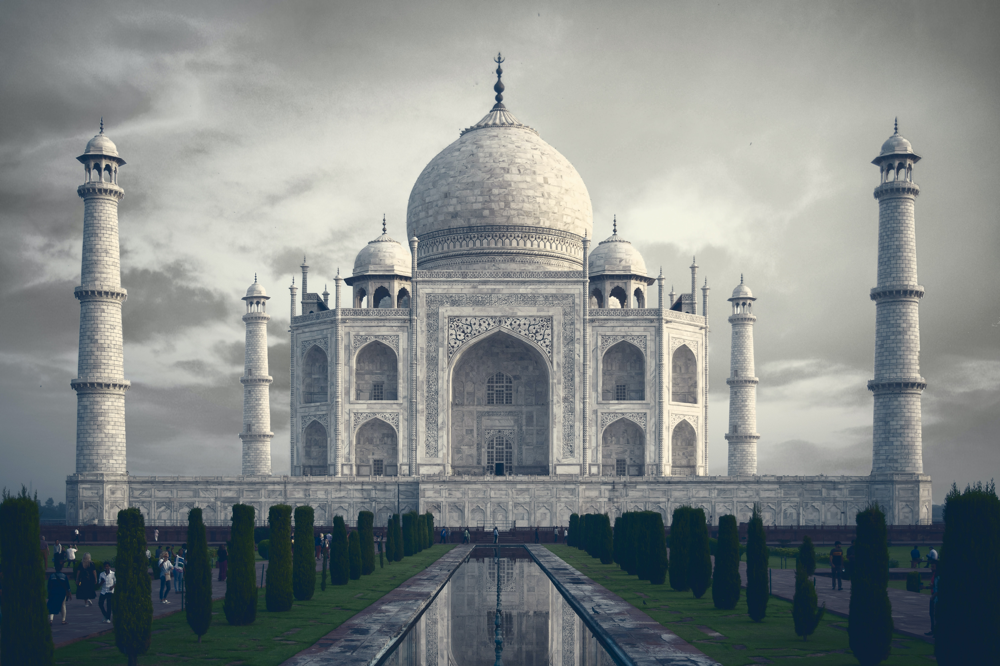

taj mahal

taj mahal
the holy city of varanasi
the golden temple
taj mahal
The Taj Mahal, Agra
Perhaps India's most recognizable building, the Taj Mahal is also the world's most famous testimony to the power of love. Named after Mumtaz Mahal, the favorite wife of Emperor Shah Jahan, this most beautiful of mausoleums was begun upon her death in 1631 and took 20,000 workmen until 1648 to complete.
Incorporating many elements of Islamic design including arches, minarets, an onion-shaped dome, and black calligraphy inlaid around the entrance, the Taj Mahal is largely constructed of white marble. Adding to its splendor are delicate inlaid floral patterns and precious and semi-precious stones such as jade, lapis lazuli, diamonds, and mother of pearl.
The best time to visit is either at dawn or dusk when the atmosphere is brilliantly altered by the change in lighting. If possible, try to catch a view of the Taj Mahal's reflection from the far bank of the Yamuna River-it makes for a memorable (and safe) selfie.
Address: 64 Taj Road, Agra-282001
the holy city of varanasi

The Holy City of Varanasi
Dating back to the 8th century BC, Varanasi is one of the oldest still inhabited cities in the world. A major pilgrimage center for Hindus, this holy city has long been associated with the mighty Ganges River, one of the faith's most important religious symbols.
Varanasi offers many reasons to visit, not least of them the chance to explore the Old Quarter adjacent to the Ganges where you'll find the Kashi Vishwanath Temple, built in 1780. The New Vishwanath Temple with its seven separate temples is also of interest.
Bathing in the Ganges is of great importance to Hindus, and numerous locations known as "ghats" feature stairways leading to the water where the faithful bathe before prayers. The largest are Dasashvamedh Ghat and Assi Ghat. The latter, at the confluence of the Ganges and Asi rivers, is considered particularly holy.
Also worth seeing is Banaras Hindu University, established in 1917 and noted for its massive library with more than a million books, and the superb Bharat Kala Bhavan museum featuring fine collections of miniature paintings, sculptures, palm-leaf manuscripts, and local history exhibits.
the golden temple of amritsar
Harmandir Sahib: The Golden Temple of Amritsar
Founded in 1577 by Ram Das, Amritsar is an important hub of Sikh history and culture. The main attraction here is Harmandir Sahib, opened in 1604 and still often referred to as the Golden Temple for its beautiful gold decoration.
The holiest of India's many Sikh shrines (it also attracts many Hindus and people of other faiths), the temple was built in a blend of Hindu and Islamic styles. Its lower marble section features such flourishes as ornate inlaid floral and animal motifs, while the large golden dome represents a lotus flower, a symbol of purity to Sikhs.
In addition to its splendid design, visitors are equally impressed with the temple's spiritual atmosphere, an effect enhanced by the prayers continuously chanted from the Sikh holy book and broadcast throughout the complex.
Part of the overall experience and visitors are welcome to participate is the chance to enjoy one of the 50,000 free meals the attraction serves up to visitors each and every day.
Address: Golden Temple Road, Amritsar, Punjab 143006